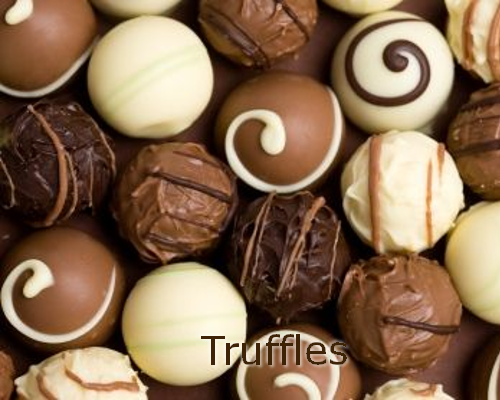

Din Mormor Choklad Products
Browse our Product List for the Best Cholocate
|  | Our chocolate truffle is a type of chocolate confectionery. It is made with a chocolate ganache center coated in chocolate, cocoa powder or chopped toasted nuts (typically hazelnuts, almonds or coconut). Usually in a spherical, conical, or curved shape | |
Our Chocolate Bars are made in small batches using only the finest ingredients that are nutritious and taste great. No chemicals, dairy, soy, gluten, or refined sugars. | ||
Our fudge is a type of confectionery which is made by mixing sugar, butter, milk, and our finest chocolate. It is heated to 240 °F (116 °C). The mixture is then beat while it cools so that it acquires a smooth, creamy consistency. | ||
Our chocolate covered cherries are a traditional dessert confection. Variations include cherry cordial with liquid fillings often including cherry liqueur, as well as chocolate covered candied cherries and chocolate covered dried cherries. We import are cherries from Traverse City, Michigan |